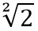
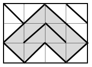

Anh Bo có một hồ cá kích thước gồm n x m ô vuông kích thước 1x1 (n dòng, m cột). Anh muốn ngăn hồ cá trên thành các khoang có kích thước nhỏ hơn. Cách ngăn như sau: dùng các vách ngăn có chiều dài  đặt tại các đường chéo của các ô 1x1 (xem hình vẽ). Có n*m vách ngăn như vậy và mỗi ô 1x1 đều được đặt một vách ngăn.

Bốn thành hồ cũng có tác dụng ngăn nước như vách ngăn. Bạn hãy giúp anh Bo tính xem khoang có diện tích lớn nhất là bao nhiêu nhé. Trong hình vẽ trên, khoang lớn nhất được tô đậm và có diện tích là 6.
Dữ liệu nhập:
- Dòng đầu tiên là 2 số nguyên n, m cách nhau một khoảng trắng (1 ≤ n, m ≤ 1.000)
- Trong n dòng tiếp theo, mỗi dòng gồm m số 0 hoặc số 1 ứng với loại vách ngăn, mỗi số cách nhau một khoảng trắng. Số 0 là vách ngăn theo đường chéo chính, số 1 là vách ngăn theo đường chéo phụ (đối chiếu ví dụ với hình vẽ)
Dữ liệu xuất:
- Là một số thực cho biết diện tích của khoang lớn nhất. Phần nguyên và phần thập phân phân cách bởi dấu chấm. Phần thập phân chỉ gồm một chữ số.